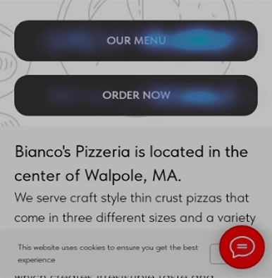
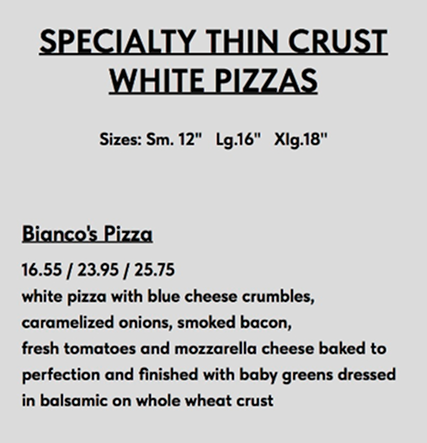
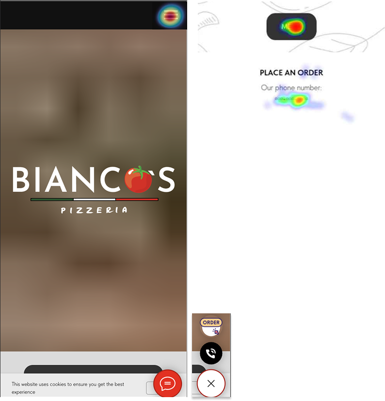
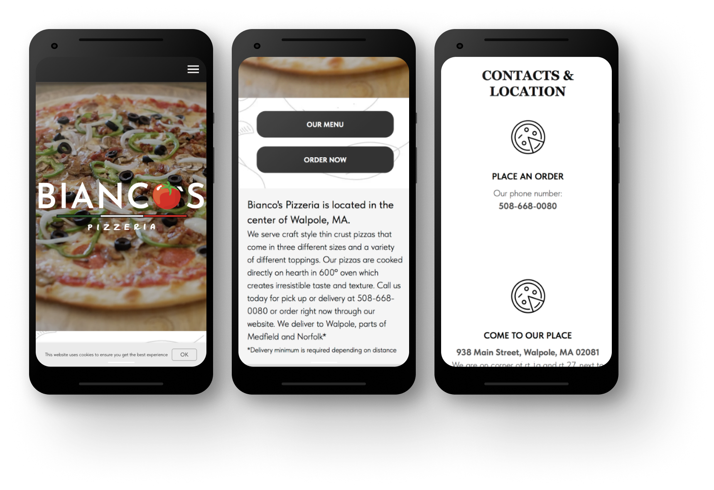

They’d already decided on pizza. The website just didn’t know that.
Most visitors arriving at Bianco’s came from Google search - active intent, not casual browsing. A hungry parent on a weeknight doesn’t need to be sold. They need one tap to ordering. The legacy site gave them a fork in the road instead.
Strong product. Loyal customers. A website in the way.
Bianco's is an independent, woman-owned thin-crust pizzeria in Walpole, MA. They run their own delivery drivers - a deliberate choice to stay off Uber Eats and DoorDash and protect their staff. The product is excellent. The local reputation is strong.
The problem wasn't awareness. Most orders still came in by phone, creating operational load and removing visibility into customer behaviour. The ask: find out what's blocking online ordering, reduce the friction, shift the balance.
Most users who land on this website have already decided to order pizza. The website isn't converting them - it's a step between their intent and their order. Every unnecessary step is friction. The goal of this project wasn't just to fix the website. It was to make the website matter less over time.
75% mobile. 65% arriving via Google search — the referrer data from Hotjar's traffic channel report. Search traffic indicates active intent: someone looking for a place to order, not browsing passively. The site needs to confirm the decision and get out of the way.
Three phases. Two complete. One in progress.
This case study documents an ongoing engagement. The work didn’t end with the redesign — it continues with measurement, validation, and iteration. Here’s where things stand.
- Behavioural audit via Hotjar and Clarity
- Unmoderated user study (3 participants)
- Single CTA replacing competing buttons
- Click-to-call phone number
- Business info moved above the fold
- Cookie banner and chat widget removed
- Menu page redirected to ordering platform (March 5)
- 30-day post-redirect data window open
- Tracking gap investigation underway
- CTA language comparison across three variants
- Post-redesign user test planned
- SEO and Google Business Profile optimisation
- Brand story content strategy
- Social media and marketing calendar
- Evaluate platform long-term (Tilda vs purpose-built)
The ordering button ranked third on its own homepage.
Behavioural data from August 2025 via Hotjar, supplemented by the full legacy window (March 2025 – January 2026) via Clarity at 100% session capture. The top-line numbers looked fine. The click data told a different story.
The homepage had two buttons side by side: OUR MENU and ORDER NOW. OUR MENU got nearly twice the taps - 19% of all site-wide clicks versus 10% for ORDER NOW. Then there was the mobile hamburger: 27% of all taps. Open it, and the first option is the food menu. A two-tap route to the same dead end.

Session recordings added two more proof points. In nearly 1 in 5 visits, users tapped something that didn’t respond - 2,641 sessions hitting dead elements, most of them the underlined menu headers that looked like links but weren’t. In 1,837 visits, users landed and immediately went back to Google - a signal that what they found didn’t match what they were looking for.
Clarity session recordings confirmed the pattern. Users tapped OUR MENU, landed on a wall of text with no photos and no way to order, scrolled, got stuck, and navigated back. The phone number was static - users tapping it expecting a dialer got nothing. Contact info sat below a fold most sessions never reached.

Two additional friction points compounded this. A chat-style bubble in the corner - styled to look like a messaging widget - offered “Call” and “Order” on tap. It received 28 interactions, almost all from confused users. A cookie consent banner appeared on every desktop session. Both have since been removed.

Three participants. One thing none of them were asked about.
Unmoderated study via Hotjar. Two scenarios: browse naturally, then attempt a specific order. No prompts on food photography. No leading questions.
All three participants mentioned missing food photography without being prompted. Three strangers, one session each, same observation. When that happens it stops being an assumption. It's a finding.
Shosh also found a bug on Speedline - the third-party ordering platform - where switching from delivery to pickup erased all entered address data. Outside direct control, but documented: friction at the handoff costs orders the website already earned.
Most users never had a clear path. Now they do.
This project sits inside a structural constraint that shapes every decision: the ordering platform lives on a separate domain. Once a user leaves the Bianco's website for Speedline, all tracking stops. Whether they placed an order is invisible.
That constraint also reveals the real goal. The best outcome for this project isn't more website traffic. It's less. If users can reach Speedline directly from Google without ever touching the website, the website has done its job by staying out of the way.
Most web projects measure conversion on the website itself. Here, conversion happens on a platform we don't own and can't instrument. Every metric in this project is a signal, not a confirmed sale. That shaped every measurement decision from the start.
Users weren't avoiding ordering. They wanted to see the food first - a natural step before committing. The fix wasn't removing the menu path. It was making both paths lead to the same place: Speedline, which works as both a browsable menu and an ordering system.
Every decision traceable. Nothing cosmetic.
Same Tilda CMS, no platform rebuild. Each change is grounded in a specific finding.

| What changed | Why |
|---|---|
| Two equal CTAs → single “Start Order” | OUR MENU got twice the taps of ORDER NOW. Eliminating the split removes the dead-end path. “Start Order” over “Order Now” - implies browsing is welcome, not that you must commit immediately. |
| Phone number → click-to-call | Clarity recordings confirmed users tapping static phone text expecting a native dialer. Nothing happened. |
| Anonymous pizza grid → named, clickable specials | All three study participants independently cited missing food photography. Named items give first-time visitors a visual anchor before clicking through. |
| Business info → above the fold | Location, phone, and delivery area were hidden below a full-viewport hero with no scroll affordance. Moved above it. |
| CTA repeated mid-page | Scroll depth data showed 50%+ of sessions reaching mid-page. The CTA needs to be there to meet them. |
| Cookie banner removed | No legal requirement for a US-only local audience. Removed friction and cleaned up data capture. |
| Chat-style bubble removed | 28 taps, almost all from confused users. Engagement driven by wrong affordance is not positive engagement. |
| Static menu page → redirected to Speedline | Post-redesign Clarity recordings showed rage and dead clicks concentrated on /menu. The static page remained an active dead end even after the homepage was fixed. Redirect completed March 5, 2026. |
The signals that matter. And the one still missing.
January 6 to March 4, 2026. Hotjar on free tier at 35% sampling - counts are estimates, ratios and patterns are valid. Clarity at 100% capture throughout.
| What we measured | Before | After | |
|---|---|---|---|
| Users coming back for a second visit | 13.1% | 29.6% | ↑ Doubled |
| Time spent per visit | 5:45 | 6:03 | ↑ |
| Users reaching the mid-page order button | 49.8% | 53.4% | ↑ |
| Frustrated repeated tapping | 2 sessions | 0 | Resolved |
| Single-page visits | 27.3% | 41.7% | Expected - see below |
Single-page visits went up because the redesign works. On the old site, tapping OUR MENU loaded a second page - analytics counted that as engagement. Now a user who lands, taps Start Order, and goes to Speedline registers as a single-page visit. That's not abandonment. That's the intended path completing.
How tapping behaviour shifted
Post-redesign recordings showed rage and dead clicks concentrated on the /menu page. The static page was still a live dead end even after the homepage was fixed. The redirect to Speedline shipped March 5. Results pull scheduled April 5.
Before the redesign, 1 in 4 visits ended with a click to the ordering platform. After, it was nearly 1 in 2. That shift came from copy and hierarchy changes only - no platform rebuild. The tracking constraint remains: the moment a user leaves for Speedline, visibility ends. Closing that gap is the next priority.
Friction removed. Foundation to build on.
The homepage redesign and menu redirect are complete. The work now shifts to validation and iteration - each next step held until there’s enough data to act on it deliberately.
| What | When / Status |
|---|---|
| Menu redirect evaluation | 30-day window open. Results pull scheduled April 5, 2026. Watching whether fewer users are hitting the old menu page, whether frustrated tapping has resolved, and whether more visits are ending with a click to the ordering platform. |
| CTA language comparison | Three button labels are currently in use across the site: “Start Order” on the homepage, “Order Now” as a legacy variant, and “Order” on secondary pages. An unintentional three-way test. Will track which label drives more clicks to the ordering platform once the data window is clean. |
| Closing the tracking gap | Inquiry sent to the ordering platform to ask whether it can receive tags from the website. If yes, it becomes possible to see which website visits led to actual orders - the most important number in this whole project. |
| Day and time patterns | Hypothesis: most orders happen Thursday through Saturday evening. Validating against session data to understand when the site needs to perform most, and to time any future tests or changes accordingly. |
| User testing - post-redesign | No moderated test of the current experience yet. Planned: test the full path from homepage through Speedline ordering to surface any remaining friction at the handoff. |
Longer term, there’s a brand story that hasn’t been told yet. Long-tenured kitchen staff. Their own delivery drivers. A deliberate choice not to join Uber Eats - made to protect livelihoods, not just margins. A content strategy rooted in that story, paired with SEO work and a marketing calendar, is the difference between a fixed website and a growing business.
The reasoning is the work.
The most important calls in this project weren't design decisions. They were interpretation calls - understanding what the tap data actually meant, why more single-page visits was a sign the site was working better, why the food menu needed to be treated as user intent before it could be treated as a design problem.
Working within a free-tier toolset, a third-party platform that couldn't be modified, and incomplete conversion data: that's what this engagement actually looked like. Navigating that clearly is the skill.
This was also my first time working in Tilda CMS and using Hotjar and Clarity as analytics tools - both new to this engagement rather than brought in with prior experience. The learning happened alongside the work.